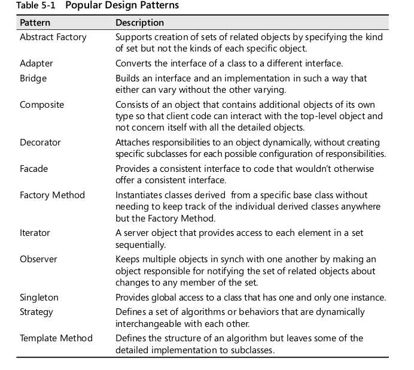

Levelling up as a developer
Best practices for improving code quality and avoid burnout
Gabriele Colombera /
@gabricom
PUG SONDRIO - 11 Settembre 2019


Fonti
- Code Complete - Steve McConnell
- Clean Code - Robert C. Martin
WHY?
Scrivete codice così ?

Oppure così ?

TRUTHS ABOUT CODING
- Time reading > Time writing
- Ti dimentichi il tuo codice in fretta
- I membri del tuo team pensano diversamente da te
- L'unica costante è il cambiamento
- Per essere un buon programmatore non basta saper scrivere codice che funzioni
CLEAN CODE SAVES TIME
Costruire software è difficile.
Attività


L'importanza dei requisiti
I requisiti devono descrivere dettagliatamente tutto quello che l'applicazione deve fare e sono il primo passo verso una possibile soluzione.
Il successo di un progetto è già determinato prima ancora che iniziamo a scrivere una riga di
codice.
Se le basi non sono solide il massimo che si può fare dopo è cercare
di contenere i danni al minimo.
Errori comuni
- Non abbiamo le competenze per analizzare i requisiti del progetto nel modo corretto
- Vogliamo iniziare subito a programmare e quindi passiamo direttamente alla scrittura del codice
"If you want to develop high-quality software, attention to quality must be part of the software-development process from the beginning to the end. Attention to quality at the beginning has a greater influence on product quality than attention at the end."
Più si è avanti con il progetto più un requisito errato incide sul costo

Imparare a analizzare le funzionalità di un progetto e redarre una lista il più completa possibile possibile di requisiti è quindi importante quanto saper scrivere codice
Alcuni elementi da considerare
- Program Organization
- Major Classes
- Data design
- Business Rules
- User Interface design
- Resource Management
- Security
- Performance
- Scalability
- Interoperability
- Internazionalization
- Input/Output
- Error Processing
Ma il codice?
HOW TO LEVEL UP
TAKE YOUR TIME
- Refactor frequently
- After it works: look at your code and improve it
- Have no fear to throw things away
KEEP GRINDING
- Always question your code with you and others
- Keep studying
- Enjoy conferences and stuff
TAKE A BREAK
- Sometimes 20 minutes of relax are better than 2 hour of hard-work
The Clean Coder Rule
Always leave the code cleaner than you found it.
CLEAN CODE
"Any fool can write code that a computer can understand. Good programmers write code that humans can understand. "
Martin Fowler
How do you write Clean Code?
"Imagine that the developer who comes after you is a homicidal maniac who knows where you live."
Unknown
Desirable characteristics of a design
- Minimal complexity
- Ease of maintenance
- Loose coupling
- Extensibility
- Portability
Software’s Primary Technical Imperative: Managing Complexity
- Identify the objects and their attributes (methods and data)
- Determine what can be done to each object.
- Determine what each object is allowed to do to other objects.
- Determine the parts of each object that will be visible to other objects—which parts will be public and which will be private.
- Define each object’s public interface.
Form Consistent Abstractions and hide informations
Abstraction is the ability to engage with a concept while safely ignoring some of its details—handling different details at different levels
Keep Coupling Loose
Coupling describes how tightly a class or routine is related to other classes or rou- tines. The goal is to create classes and routines with small, direct, visible, and flexible relations to other classes and routines, which is known as “loose coupling.”
Look for common design patterns
DRY
Don't repeat yourself!
SOLID
Single responsibility principle
A class should only have one reason to change
interface Cart{
public function getItems();
public function addItem($item);
public function removeItem($item);
public function calculateTotal();
public function processPayment($account,$amount);
}
interface ProductCollection{
public function getItems();
public function addItem(Product $item);
public function removeItem(Product $item);
}
interface CartPaymentProcessor{
public function calculateTotal(ProductCollection $productCollection);
public function processPayment(AccountInterface $account, Amount $amount);
}
Open-closed principle
A Class should be open for extensions, but closed for modification.
class Programmer
{
public function code()
{
//[...] DO STUFF
}
}
class Tester
{
public function test()
{
//[...] DO STUFF
}
}
class ProjectManagement
{
public function process($member)
{
if ($member instanceof Programmer) {
$member->code();
} elseif ($member instanceof Tester) {
$member->test();
};
throw new Exception('Invalid input member');
}
}
interface Workable
{
public function work();
}
class Programmer implements Workable
{
public function work()
{
//[...] DO STUFF
}
}
class Tester implements Workable
{
public function work()
{
//[...] DO STUFF
}
}
class ProjectManagement
{
public function process(Workable $member)
{
return $member->work();
}
}
Liskov substitution principle
Objects should be replaceable by their subtypes without altering how the program works.
class Rectangle {
private $topLeft;
private $width;
private $height;
public function setHeight($height) {
$this->height = $height;
}
public function getHeight() {
return $this->height;
}
public function setWidth($width) {
$this->width = $width;
}
public function getWidth() {
return $this->width;
}
public function area() {
return $this->width * $this->height;
}
}
class Square extends Rectangle {
public function setHeight($value) {
$this->width = $value;
$this->height = $value;
}
public function setWidth($value) {
$this->width = $value;
$this->height = $value;
}
}
function areaVerifier(Rectangle $r) {
$r->setWidth(5);
$r->setHeight(4);
if($r->area() != 20) {
throw new Exception('Bad area!');
}
return true;
}
Interface Segregation Principle
Many client-specific interfaces are better than one general-purpose interface
interface Workable
{
public function canCode();
public function code();
public function test();
}
class Programmer implements Workable
{
public function canCode()
{
return true;
}
public function code()
{
return 'coding';
}
public function test()
{
return 'testing in localhost';
}
}
class Tester implements Workable
{
public function canCode()
{
return false;
}
public function code()
{
throw new Exception('Opps! I can not code');
}
public function test()
{
return 'testing in test server';
}
}
class ProjectManagement
{
public function processCode(Workable $member)
{
if ($member->canCode()) {
$member->code();
}
}
}
interface Codeable
{
public function code();
}
interface Testable
{
public function test();
}
class Programmer implements Codeable, Testable
{
public function code()
{
return 'coding';
}
public function test()
{
return 'testing in localhost';
}
}
class Tester implements Testable
{
public function test()
{
return 'testing in test server';
}
}
class ProjectManagement
{
public function processCode(Codeable $member)
{
$member->code();
}
}
Dependency inversion principle
Depend upon abstractions, not concretions.
class SmtpMailer
{
//methods for mailer
public function send(string $message){
//send message through smtp
}
}
class WelcomeMessageSender
{
private $smtpMailer;
public function __construct(SmtpMailer $mailer)
{
$this->smtpMailer = $mailer;
}
public function sendMessage(){
$this->smtpMailer->send("WELCOME TO PUG SONDRIO!");
}
}
interface MailerInterface
{
public function send(string $message);
}
class SmtpMailer implements MailerInterface
{
public function send(string $message)
{
// Send an email via SMTP
}
}
class SendSlackMailer implements MailerInterface
{
public function send(string $message)
{
// Send a message via Slack
}
}
class WelcomeMessageSender
{
private $mailer;
public function __construct(MailerInterface $mailer)
{
$this->mailer = $mailer;
}
public function sendMessage(){
$this->maler->send("WELCOME TO PUG SONDRIO!");
}
}
Meaningful naming
Use intention-revealing names
The name of a variable, function, or class, should answer all the big questions. It should tell you why it exists, what it does, and how it is used. If a name requires a comment, then the name does not reveal its intent.
//That's a Drupal 8 trait
protected function t($string, array $args = [], array $options = []) {
//do stuff
}
/**
* Translates a string to the current language or to a given language.
*
* See \Drupal\Core\StringTranslation\TranslatableMarkup::__construct() for
* important security information and usage guidelines.
*
* In order for strings to be localized, make them available in one of the
* ways supported by the
* @link https://www.drupal.org/node/322729 Localization API @endlink. When
* possible, use the \Drupal\Core\StringTranslation\StringTranslationTrait
* $this->t(). Otherwise create a new
* \Drupal\Core\StringTranslation\TranslatableMarkup object.
*
* @param string $string
* A string containing the English text to translate.
* @param array $args
* (optional) An associative array of replacements to make after
* translation. Based on the first character of the key, the value is
* escaped and/or themed. See
* \Drupal\Component\Render\FormattableMarkup::placeholderFormat() for
* details.
* @param array $options
* (optional) An associative array of additional options, with the following
* elements:
* - 'langcode' (defaults to the current language): A language code, to
* translate to a language other than what is used to display the page.
* - 'context' (defaults to the empty context): The context the source
* string belongs to. See the
* @link i18n Internationalization topic @endlink for more information
* about string contexts.
*
* @return \Drupal\Core\StringTranslation\TranslatableMarkup
* An object that, when cast to a string, returns the translated string.
*
* @see \Drupal\Component\Render\FormattableMarkup::placeholderFormat()
* @see \Drupal\Core\StringTranslation\TranslatableMarkup::__construct()
*
* @ingroup sanitization
*/
protected function t($string, array $args = [], array $options = []) {
//[...]
}
protected function translate(string $stringToTranslate, array $args = [], array $options = []):string {
//[...]
}
//BAD
public function calculate(array $array){
$t=0;
foreach($array as $r){
$t+=$r->getPrice()*$r->getQuantity();
}
return $t;
}
//GOOD
public function calculateProductsTotal(ProductCollection $products){
$total = 0;
foreach($products as $product){
$total += $product->getPrice() * $product->getQuantity();
}
return $total;
}
Avoid disinformation
Don't call something it's not!
class Collection{
//used for collection of different types of elements
}
class ArrayCollection extends Collection{
//collection of Array
}
public function something(){
$userCollection = []; //That's not a collection! Better call that $userGroups or $userArray
}
Make meaningful distinctions
Variable represent different things, and should be named to show that
class ProductInfo{
//[...]
}
class ProductData{ //you have made the names different without making them mean anything different
//[...]
}
//BAD
public function copyFileInDirectory($path,$path){
}
//GOOD
public function copyFileInDirectory(string $sourceFilePath,string $destinationDirectoryPath){
}
Use pronunceable names
//BAD
class DtaRcrd {
private $genymdhms;
private $modymdhms;
private $pszqint;
/* ... */
};
//GOOD
class Customer {
private $generationTimestamp;
private $modificationTimestamp;;
private $recordId;
};
Class names should be nouns
Classes lead to objects which are things not actions
Example: Customer,Account,AddressParser,Cart,User,Authenticator
Method names should start with a verb
Methods are actions performed on and with things
Example: postPayment,deletePage,save,parseDocument
Pick one word per concept
Using synonyms for the same action, on different objects, is confusing
Example: fetch/retrieve/get
Add meaningful context and don't add context when is not needed
There are a few names which are meaningful in and of themselves—most are not. Instead, you need to place names in context for your reader by enclosing them in well-named classes, functions, or namespaces. When all else fails, then prefixing the name may be necessary as a last resort.
class Address{
private $name;
private $lastName;
private $street;
private $postalCode;
// enough context
}
public function generateReceipt(){
// [...]
$name = "something"; //Is that the name of what? better write $addressName;
}
class Product{
public function addDiscountCode($code){
// ...enough context
}
}
//prefix needed
public function addProductDiscountCode(Product $product, string $code){
}
Functions
Small!
The first rule of functions is that they should be small. The second rule of functions is that they should be smaller than that.
- Functions should fit on a single screen
- Prefer method no longer than 10 lines
Blocks within statements should be one line long
Probably that line should be a function call. Not only does this keep the enclosing function small, but it also adds documentary value because the function called within the block can have a nicely descriptive name.
Class VehiclesImportCommand{
//[...]
public function importVehicles(){
try{
foreach($this->xmlDataStream as $vehicleXmlNode){
try {
$this->currentVehicle = new Vehicle();
$this->currentNode = $vehicleXmlNode;
$this->parseCurrentNodeData();
$this->persistCurrentVehicle();
$this->confirmCurrentVehicleImport();
//[...] Other stuff
} catch (MissingDataException $exception) {
$this->handleVehicleError($exception);
}
}
}
catch (\Exception $e) {
$this->addCriticalError($e);
}
}
}
Class VehiclesImportCommand{
//[...]
public function importVehicles(){
try{
foreach($this->xmlDataStream as $vehicleXmlNode){
$this->importVehicleFromXmlNode($vehicleXmlNode);
}
}
catch (\Exception $e) {
$this->addCriticalError($e);
}
}
}
Class VehiclesImportCommand{
//[...]
public function importVehicles(){
try{
$this->importVehiclesFromXmlStream();
}
catch (\Exception $e) {
$this->addCriticalError($e);
}
}
}
Do not use else
private function handleInvoiceCreation(Request $request, AbstractInvoice $invoice)
{
$form = $this->formFactory->create(InvoiceType::class, $invoice);
$form->handleRequest($request);
if($this->user->canCreate()) {
if ($form->isSubmitted() && $form->isValid()) {
$this->entityManager->persist($invoice);
$this->entityManager->flush();
$this->flashBag->addSuccessMessage('Fattura creata con successo');
$this->entityManager->refresh($invoice);
return new RedirectResponse(
$this->router->generate('panel_detail', ['invoice' => $invoice->getId()])
);
} else {
return [
'form' => $form->createView(),
'invoice' => $invoice,
];
}
} else {
// qualcos altro
}
}
private function handleInvoiceCreation(Request $request, AbstractInvoice $invoice)
{
$form = $this->formFactory->create(InvoiceType::class, $invoice);
$form->handleRequest($request);
if ($this->user->canCreate()) {
throw new Exception('Non puoi creare una invoice');
}
if ($form->isSubmitted() && $form->isValid()) {
$this->entityManager->persist($invoice);
$this->entityManager->flush();
$this->entityManager->refresh($invoice);
$this->flashBag->addSuccessMessage('Fattura creata con successo');
return new RedirectResponse(
$this->router->generate('panel_detail', ['invoice' => $invoice->getId()])
);
}
return [
'form' => $form->createView(),
'invoice' => $invoice,
];
}
Do one thing!
If the names includes and or doesn't describe all the functionality well it's doing too much
Class ProductHelper(){
//Generic Name , probably doing a lot of stuff who need to be splitted in subclasses
}
public function GetXmlDataParseNodeCheckIfNotPresentAndPersistVehicleToDatabase(){
//That's probably wrong
}
class ProductsHtmlRenderer(){
public function retrieveProducts(){
return $this->EntityManager->getRepository(Product::class)->findActiveProducts();
//This function is not related to the HtmlRenderer, the class is doing too much and the name is wrong and deceptive
}
public function renderProducts(){
$products = $this->retrieveProducts();
//return a html page with products
}
}
One level of abstraction per function
Don't mix high-level abstract stuff with low-level detail code
public function isOrderFormValid(OrderForm $orderForm){
$this->checkRequiredData($orderForm);
$this->userValidator->checkIfUserExist($orderForm->getUser());
// this is stuff from a different level of abstraction
if($orderForm->getSecurityCode() !== "pugsondrio"){
throw new SecurityException("Wrong Security Code");
}
}
//This is Better
public function isOrderFormValid(OrderForm $orderForm){
$this->checkRequiredData($orderForm);
$this->userValidator->checkIfUserExist($orderForm->getUser());
$this->checkSecurityCode($orderForm->getSecurityCode());
}
The stepdown rule
The code should be readable from top to bottom, descending one level of abstraction per function.
A caller function should always reside above the callee function
Avoid switch
Use polymorphism instead
class Airplane
{
// ...
public function getCruisingAltitude(): int
{
switch ($this->type) {
case '777':
return $this->getMaxAltitude() - $this->getPassengerCount();
case 'Air Force One':
return $this->getMaxAltitude();
case 'Cessna':
return $this->getMaxAltitude() - $this->getFuelExpenditure();
}
}
}
interface Airplane
{
// ...
public function getCruisingAltitude(): int;
}
class Boeing777 implements Airplane
{
// ...
public function getCruisingAltitude(): int
{
return $this->getMaxAltitude() - $this->getPassengerCount();
}
}
class AirForceOne implements Airplane
{
// ...
public function getCruisingAltitude(): int
{
return $this->getMaxAltitude();
}
}
class Cessna implements Airplane
{
// ...
public function getCruisingAltitude(): int
{
return $this->getMaxAltitude() - $this->getFuelExpenditure();
}
}
Use as less arguments as possible. Use objects and arrays when you need many arguments
The ideal number of arguments for a function is zero . Three arguments should be avoided where possible. More than three requires very special justification—and then shouldn’t be used anyway.
Don't use flag arguments
Flag arguments are ugly. Passing a boolean into a function is a truly terrible practice. It immediately complicates the signature of the method, loudly proclaiming that this function does more than one thing. It does one thing if the flag is true and another if the flag is false!
function createFile(string $name, bool $temp = false): void
{
if ($temp) {
touch('./temp/'.$name);
} else {
touch($name);
}
}
function createFile(string $name): void
{
touch($name);
}
function createTempFile(string $name): void
{
touch('./temp/'.$name);
}
Avoid side-effects
public function isCurrentUserActive(){
$currentUser = $this->securityHandler->getCurrentUser();
if($currentUser->isActive()){
return true;
}
$this->UserManager->delete($currentUser); // that's another
return false;
}
Command Query separation
Functions should either do something or answer something, but not both. Either your function should change the state of an object, or it should return some information about that object. Doing both often leads to confusion
class UserAuthenticationService{
public function login(string $username, string $password){
$user = $this->getUser($username);
if($this->passwordEncoder->isPasswordValid($user->getHashPassword())){
$this->createAuthenticatedSession();
return $user; // That's bad , create a getCurrentAuthenticatedUser function instead
}
}
}
Comments
Comments = bad code
The proper use of comments is to compensate for our failure to express ourself in
code.
If you need comments to understand what the code is doing then the code is poorly written.
Good comments
- Can be used to describe intent or clarification
- Can be used to give warnings or consequences
- Can be used for TODOs
but these should be temporary!
Formatting
Add vertical spaces between concepts
Order methods by depth
if method a depends on b and then c that is the order in which they should appear
public function getUsersForRender(){
$users = $this->userRepository->getUsers();
return $this->parseUserCollection($users);
}
private function parseUserCollection(ArrayCollection $users){
$parsedUsers = [];
foreach($users as $user){
$parsedUsers[] = $this->parseUser($user);
}
return $parsedUsers;
}
private function parseUser(User $user){
//and so on..
}
Order methods by conceptual affinity
If two methods do similar things put them close together
Limit line length
Don't make readers scroll horizontally if you care for your life
Space between operators and assignment
A bit of horizonal spacing improve readability
$income=$promoEarnings+$developmentEarnings+$gifts-$this->getMonthlyExpenses();
$income = $promoEarnings + $developmentEarning + $gifts - $this->getMonthlyExpenses();
Have team standards
Adopt one standard as a team for naming, spacing , and all formatting stuff.
Use Exceptions instead returning error codes
if (deletePage($page) == E_OK) {
if ($registry->deleteReference($page->getName()) == E_OK) {
if ($configKeys->deleteKey($page->getKey()) == E_OK){
$logger->log("page deleted");
} else {
$logger->log("configKey not deleted");
}
} else {
$logger->log("deleteReference from registry failed");
}
} else {
$logger->log("delete failed");
return E_ERROR;
}
try {
deletePage($page);
$registry->deleteReference(page->getName());
$configKeys->deleteKey(page->getKey());
}
catch (Exception $exception) {
$logger->log($exception->getMessage());
}
Don't return null
If you are tempted to return null from a method, consider throwing an exception or returning a SPECIAL CASE object instead
When we return null, we are essentially creating work for ourselves and foisting problems upon our callers
Throw a meaningful exception
$user = $userRepository->get('John');
if (null !== $user && $user->isSubscribedTo($notification)) {
$notifier->notify($user, $notification);
}
interface UserRepository
{
public function get(string $username): ?User;
}
interface UserRepository
{
/**
* @param string $username
* @throws UserNotFound
* @return User
*/
public function get(string $username): User;
}
final class DbUserRepository implements UserRepository
{
public function get(string $username): User
{
$userRecord = $this->db->fetchAssoc('SELECT * FROM users W');
if (false === $userRecord) {
throw new UserNotFound();
}
return User::fromArray($userRecord);
}
}
try {
$user = $userRepository->get($username);
if ($user->isSubscribedTo($notification)) {
$notifier->notify($user, $notification);
}
} catch (UserNotFound $ex) {
$this->logger->notice('User was not found', ['username' => $u ];
}
Special Case
A subclass that provides special behavior for particular cases
class UnknownUser extends User
{
public function username(): string
{
return 'unknown';
}
public function isSubscribedTo(Notification $notification): b
{
return false;
}
}
//special case factory
class User
{
public static function unknown(): User
{
static $unknownUser = null;
if (null === $unknownUser) {
$unknownUser = new UnknownUser();
}
return $unknownUser;
}
}
final class DbUserRepository implements UserRepository
{
public function get(string $username): User
{
$userRecord = $this->db->fetchAssoc('SELECT * FROM users W ');
if (false === $userRecord) {
return new UnknownUser();
}
return User::fromArray($userRecord);
}
}
//Checking for special case
if ($user === User::unknown()) {
//do something
}
//Special case object as private nested class
class User
{
public static function unknown(): User
{
static $unknownUser = null;
if (null === $unknownUser) {
$unknownUser = new class extends User {
public function username(): string
{
return 'unknown';
}
public function isSubscribedTo(Notification $noti
{
return false;
}
};
}
return $unknownUser;
}
}
Don't pass null
Returning null from methods is bad, but passing null into methods is worse.
class Order
{
public function __construct(
Product $product,
Customer $customer,
?Discount $discount
) {
$this->product = $product;
$this->customer = $customer;
$this->discount = $discount;
}
}
final class PremiumDiscount implements Discount
{
public function apply(float $productPrice): float
{
return $productPrice * 0.5;
}
}
class Order
{
public function __construct(
Product $product,
Customer $customer,
?Discount $discount //nullable
) {
$this->product = $product;
$this->customer = $customer;
$this->discount = $discount;
}
public function total(): float{
$price = $this->product->getPrice();
if (null !== $this->discount){ //bad code
$price = $this->discount->apply($price);
}
return $price;
}
}
class Order
{
public function __construct(
Product $product,
Customer $customer,
Discount $discount
) {
$this->product = $product;
$this->customer = $customer;
$this->discount = $discount;
}
}
final class NoDiscount implements Discount
{
public function apply(float $productPrice): float
{
return $productPrice;
}
}
//use example
$order = new Order($product, $customer, new NoDiscount());
Exception Vs Special Case
- Special Case as default strategy instead of optional parameters
- Exceptions break normal ow to split business logic from error handling
- Special Case handles exceptional behaviour
- Exception emphasizes violated business rule
CENTRAL ERROR HANDLER
Do not catch exception
unless you have a very good reason
When to catch exceptions?
Wraps the entire system to handle any uncaught exceptions from a single place
Classes
Class Organization
//public static constants
//private static variables
//private instance variables
//public functions
//private functions called by a public function right after the public function itself
Encapsulation
Keep variables and functions private if it's not needed to be public or protected. Information hiding is the way to manage complexity
Small!
Keep Classes small by following the single principle responsibility. Class should have only one, and only one reason to change.
Prefer composition over inheritance
PHP & QUALITY TOOLS
Use types!
PHP was shit, but now it's better. What's your excuse?
public function addProductToWishlist($product,$user,$wishlistG){
//stuff
}
public function addProductToWishlist(Product $product, User $user, Wishlist $wishlist): void
{
}
Use phpdocs!
Document arguments, return types and exceptions, a good IDE like PHPStorm generate them for you!
/**
* @param StockMovementGenerator $stockMovementGenerator
* @param float $movement
* @param string $type
* @param Commission $commission
*
* @return StockMovement
*/
public function generateStockMovement(
StockMovementGenerator $stockMovementGenerator,
float $movement,
string $type,
Commission $commission
): StockMovement {
if (! $this->isTypeValid($type)) {
throw new \InvalidArgumentException('Type is not valid');
}
$stockMovement = StockMovementFactory::build($stockMovementGenerator);
$stockMovement->setMovement($movement);
$stockMovement->setType($type);
if ($commission !== Commission::notSet()) {
$stockMovement->setCommission($commission);
}
$stockMovement->setRelatedObject($stockMovementGenerator);
return $stockMovement;
}
PHP STORM
Probably the best php IDE around
PHP CS FIXER
Good for setting a standard for formatting in a team. Uses PSR but can be customizable as you wish
PHP MESS DETECTOR
What PHPMD does is: It takes a given PHP source code base and look for several potential problems within that source. These problems can be things like: Possible bugs Suboptimal code Overcomplicated expressions Unused parameters, methods, properties